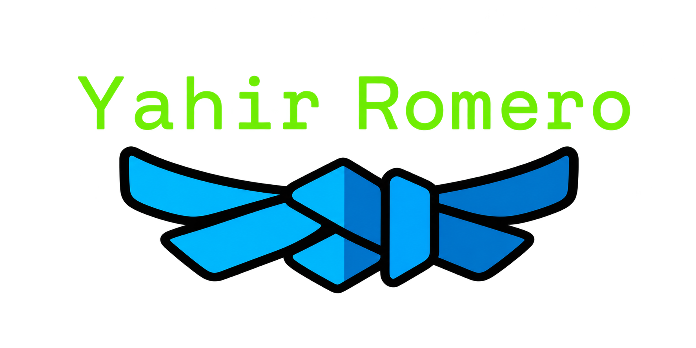

Especialistas en
Ciberseguridad y Pentesting
Ponemos a prueba la seguridad de quienes protegen tu infraestructura.
Nuestro pentesting somete tus sistemas a una evaluación rigurosa.
Tras cada evaluación, proporcionamos un informe técnico con recomendaciones específicas para corregir las vulnerabilidades identificadas, fortalecer los mecanismos de protección y reducir los riesgos que podrían comprometer la seguridad de la infraestructura.
Aplicaciones
web.
Examinamos la seguridad de aplicaciones web mediante pruebas de penetración especializadas. Analizamos autenticación, controles de acceso, sesiones y lógica de negocio, validando vulnerabilidades como SQLi, XSS, CSRF, SSRF e IDOR con técnicas de explotación controladas.
Servidores y
entornos cloud.
Realizamos pruebas de penetración en servidores, redes y entornos cloud e híbridos. Evaluamos servicios y puertos expuestos, vulnerabilidades CVE, configuraciones inseguras, controles IAM y mecanismos de autenticación. Validamos vectores de explotación, escalamiento de privilegios y movimiento lateral para determinar el alcance técnico de cada vulnerabilidad.
Redes internas
y externas.
Medimos la exposición externa e interna: puertos, protocolos, segmentación, firewalls, VPN y servicios como SMB, RDP, DNS y SNMP.
Seguridad
de API.
Probamos autorización a nivel de objeto y función, BOLA/BFLA, IDOR, asignación masiva, autenticación, exposición de datos, vulnerabilidades de inyección y límites de tasa.
Motores de
bases de datos.
Realizamos pruebas de penetración sobre motores SQL y NoSQL, examinando procedimientos almacenados, consultas dinámicas, aislamiento de datos, replicación y permisos a nivel de esquema, tabla y registro. Verificamos escenarios de acceso entre usuarios, ejecución de operaciones no previstas y exposición de información mediante consultas y transacciones controladas.
Aplicamos tácticas de intrusión
usadas por ciberdelincuentes.
Llevamos técnicas usadas en ciberataques reales a escenarios de intrusión controlados. Las operaciones están diseñadas para explorar posibles rutas de acceso, evaluar los mecanismos de seguridad y analizar cómo responde una organización ante acciones adversarias en condiciones autorizadas.

INYECCIÓN SQL90%
90%ret2libc
90%Network TCP/IP
AUTORIZACIÓN / IDOR90%
DNS Spoofing90%
Explotación multivector90%
Ingeniería propia.
Desarrollamos LeensFish, nuestra tecnología de ciberseguridad, construida sobre investigación ofensiva, metodologías internacionales de pruebas de penetración y técnicas analíticas avanzadas.
Está diseñada para examinar en profundidad las superficies de ataque, identificar posibles vulnerabilidades e investigar comportamientos que las herramientas convencionales pueden pasar por alto. LeensFish representa nuestro enfoque de ingeniería aplicada al pentesting, reuniendo desarrollo propio, investigación y análisis especializado.
Explotamos los límitesde tu seguridad.
Identificamos puertos expuestos, servicios accesibles y rutas hacia datos críticos que un atacante podría convertir en acceso no autorizado, exposición de información o interrupción operativa.
ALCANOX / PENTEST AUTORIZADO
ALCANCE10.24.20.0/24 EN CURSO
FILTRO DE EVALUACIÓN
✓
FILTRO VÁLIDO
tcp.port in {22, 443, 3306, 5432} || dns
PUERTOS Y SERVICIOS IDENTIFICADOS
8 EVENTOS · 3 ACTIVOS
| N.º | Hora | Origen | Destino | Protocolo | Longitud | Detalle |
|---|---|---|---|---|---|---|
| 492 | 00:04:22.410 | 10.24.8.14 | 10.24.20.10 | DNS | 92 | Consulta A db-gateway.empresa.local |
| 493 | 00:04:22.414 | 10.24.8.14 | 10.24.20.12 | TCP | 74 | [SYN] 51422 → 5432 |
| 494 | 00:04:22.419 | 10.24.20.12 | 10.24.8.14 | TCP | 74 | [SYN, ACK] 5432 → 51422 |
| 495 | 00:04:22.425 | 10.24.8.14 | 10.24.20.18 | TLSv1.3 | 517 | Client Hello, SNI=api.empresa.local |
| 496 | 00:04:22.431 | 10.24.8.14 | 10.24.20.12 | PGSQL | 122 | Servicio PostgreSQL identificado / tcp 5432 |
| 497 | 00:04:22.438 | 10.24.8.14 | 10.24.20.12 | PGSQL | 86 | Validar ACL, TLS, roles y autenticación |
| 498 | 00:04:22.443 | 10.24.20.18 | 10.24.8.14 | HTTP | 128 | GET /health · 200 OK |
| 499 | 00:04:22.452 | 10.24.20.16 | 10.24.8.14 | SSH | 164 | Servicio administrativo detectado / tcp 22 |
SERVICIO VALIDADODB-01 / TCP 5432
- ⌄Activo evaluadodb-gateway.empresa.local
- ⌄Servicio identificadoPostgreSQL 14 / tcp 5432
- ›Exposición de redaccesible desde el segmento de aplicaciones
- ›Validación requeridaACL, TLS, roles y autenticación
EVIDENCIA DEL SERVICIODB-01 / TCP 5432
activo: db-gateway.empresa.local
servicio: PostgreSQL 14 / tcp 5432
controles: ACL · TLS · roles · auditoría
Investigación forensey análisis.
Realizamos investigaciones forenses privadas de alta complejidad, integrando tecnología avanzada, análisis de tráfico de red, inspección de paquetes, análisis de memoria y correlación de eventos de seguridad.
Examinamos en profundidad la actividad digital para rastrear intrusiones, identificar conexiones sospechosas, reconstruir secuencias de actividad y determinar el alcance de incidentes cibernéticos. Nuestras investigaciones siguen protocolos estrictos de confidencialidad, preservación de evidencia digital y rigor técnico.
LeensFish.
Ingeniería avanzada
en defensa cibernética.
Desarrollada para anticipar, detectar y neutralizar ciberataques a escala.
Conocer LeensFish ↗Certificación y emblemas.
-

-

-

-

-

-

Nuestros
clientes
Trabajamos con cada cliente bajo un alcance definido y protegemos la confidencialidad de su información y sus resultados.
No divulgamos relaciones comerciales, proyectos ni información sensible.
La identidad de nuestros clientes, sus infraestructuras y la información relacionada con nuestros servicios se mantienen bajo estricta confidencialidad.